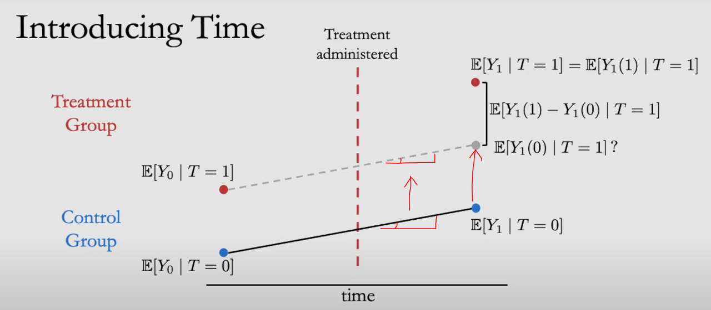
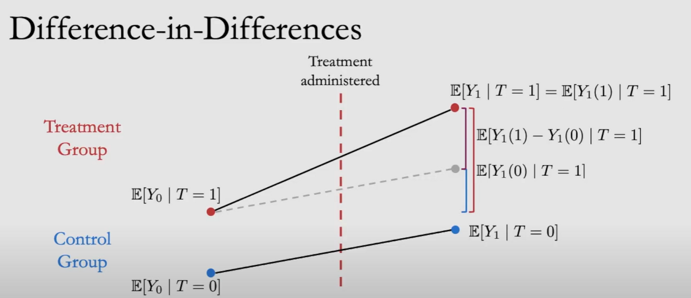

안녕하세요, 가짜연구소 Causal Inference 팀의 김성수, 남궁민상입니다.
Introduction to Causal Inference 강의의 열 번째 챕터이며, 해당 챕터에서 다루는 내용은 아래와 같습니다.
Contents
- Motivation and Preliminaries
- Difference-in-Differneces Overview
- Assumptions and Proof
- Probelms with Difference-in-Differences
◦ 강의 영상 링크 : Chapter 10 - Difference in Difference
작성된 내용 중 개선점이나 잘못된 부분이 있다면 댓글로 알려주세요!
1. Motivation
Q. 인과관계를 밝히려면 어떻게 해야할까요?
A. RCT, frontdoor adjustment, backdoor adjustment, do-calculus 등을 이용해 confounding factor를 통제하고 연관관계를 보세요 (~Chapter 7)
Q. unobserved confounding factor가 있으면 어떡하죠?
A. 몇 가지 가정을 통해 구간을 줄일 수도 있고 (Chapter 8) 도구변수를 이용해 unobserved confounder의 영향을 없앨 수 있습니다 (Chapter 9)
Q. 괜찮은 도구변수를 찾는 게 너무 힘들어요.
A. 도구변수 외에도, unobserved confounder를 처리하는 기법들이 이것저것 있습니다.
→ 그 중 하나가 오늘 다룰 이중차분법(Difference-in-Differences)입니다!
DID는 평행 추세를 가정합니다 (parallel trends assumption)
쉽게 말해, 처치집단과 통제집단이 다를 수는 있지만 (= 변수의 값은 다를 수 있지만) 같은 추세로 움직인다는 가정 (= unobserved confounder의 영향은 두 집단에 동등하다) → 처치집단과 통제집단이 움직이는 추세가 다르다면, 이는 처치 때문이다 → 차분(difference)을 통해 confounder의 영향을 상쇄할 수 있습니다
1-1 DID 활용 예시

무기 프로모션 A와 방어구 프로모션 B의 수익을 비교해봅시다.
우리는 인과관계를 추론하는 다양한 방법을 배웠으니, “단순히 올해에는 무기 프로모션 A가 110억의 수익을 냈고, B가 100억의 수익을 냈으니, 무기 프로모션이 10억 정도 더 성과가 좋았다” 로 단순히 분석하고 끝내면 안됩니다.
그렇다면 왜 이러한 차이가 발생했을까?
커뮤니티를 분석해보니, 2021.12월부터 무기 위주 업데이트가 되었다는 커뮤니티의 평가가 있었습니다.
그럼 과연 무기 위주 업데이트가 프로모션의 수익에 영향을 미쳤을까?
Q. “무기 위주 업데이트”가 프로모션 수익에 긍정적인 영향을 미쳤나?
여기서 “무기 위주 업데이트”가 프로모션에 미친 Casual effect를 발라내기 위해 고려해야 하는 것은 아래와 같습니다.
- 같은 시점에서 서로 다른 개체를 관찰한 자료에서 오는 차이
- 각 개체마다 특성이 다를 수 있음. 즉,무기와 방어구는 전혀 다른 개체
- 다른 시점에 따른 변수의 변화
- 작년과 올해라는 시점의 변화
| 무기 프로모션 A | 방어구 프로모션 B | |
|---|---|---|
| 2021.05 | 150억(A1) | 200억(B1) |
| 2022.05 | 110억(A2) | 100억(B2) |
- 다른 시점에 따른 변수의 변화 차분
- A1 - A2 : 무기 프로모션의 시간에 따른 변화
- B1 - B2 : 방어구 프로모션의 시간에 따른 변화
- 다른 개체를 관찰한 자료에서 오는 차이 차분
- A1 - B1 : 무기 업데이트 시작 전 무기 프로모션과 방어구 프로모션 간의 차이
- A2 - B2 : 무기 업데이트 시작 후 무기 프로모션과 방어구 프로모션 간의 차이
- 이중 차분 δDD(Difference-in-Differences)
(1) 시간적 특성을 제거 (A2-A1) - (B2-B1)(2) 다른 개체에서 오는 차이를 제거 (A2-B2) - (A1-B1)
=> Term = (2) Term(1)
이렇게 Difference에 한 번 다시 Difference를 하기 때문에 Difference-in-Differences(DID)라 불리며, 이렇게 DID는 두 집단 간의 특징 차이를 제거하고, 시점에 따른 결과 변수의 변화가 얼마나 다르게 일어나는지 확인할 수 있습니다.
그럼 DID를 이해하기 위해 알아야하는 선행 개념을 알아보겠습니다.
1-2 Preliminaries
앞 챕터에서 배운 평균처리 효과(ATE)를 떠올려 보세요.
ATE:
\[ \begin{aligned}\ \mathbb{E}[Y(1)-Y(0)] &=\mathbb{E}[Y(1)]-\mathbb{E}[Y(0)] \\\ &=\mathbb{E}[Y(1) \mid T=1]-\mathbb{E}[Y(0) \mid T=0] \\\ &=\mathbb{E}[Y \mid T=1]-\mathbb{E}[Y \mid T=0] \end{aligned} \]
위의 ATE가 성립하려면 만족해야 하는 가정은 Unconfoundedness였습니다.
\((Y(0), Y(1)) \perp T\)
Unconfoundedness
ATT:
Difference in Difference 에서 활용하는 새로운 Casual estimation은 ATT라고 하며 Treatment가 (T=1)일 때의 ATE입니다.
아래의 수식과 그림을 보시죠.
\[ \begin{aligned} \mathbb{E}[Y(1)-Y(0) \mid T=1] &=\mathbb{E}[Y(1) \mid T=1]-\mathbb{E}[Y(0) \mid T=1] \\\ &=\mathbb{E}[Y \mid T=1](\text { consistency })-\mathbb{E}[Y(0) \mid T=1] \\\ &=\mathbb{E}[Y \mid T=1]-\mathbb{E}[Y(0) \mid T=0] \quad(Y(0) \perp T) \\\ &=\mathbb{E}[Y \mid T=1]-\mathbb{E}[Y \mid T=0](\text { consistency })\ \end{aligned} \]

위 식을 만족시키기 위해서는 ATE와는 다르게 Unconfoundedness보다 약한 가정이 필요합니다.
\(Y(0) \perp T\)
Weak Unconfoundedness
2 OverView
Control Group은 Treamtment(T=1)에 영향을 받지 않으니, 이 둘의 차이를 구하면 Unconfoundedness 가정 하에서 아래의 식과 같이 됩니다.
\(\mathbb{E}[Y(1)-Y(0)\mid T=1]\) (Without Time)
그럼 이제 Y-axis(Time)을 추가하여 시간에 대한 축을 나타내보고, ATT도 시간 Term을 넣어 일반화 시켜봅시다.

여기서 Treatment를 받는 것은 오직 Treatment Administered(어떠한 처치를 실행) 이후의 오른쪽 상단에 있는 수식입니다. 즉, Treatment Group이며, 이때 Control Group은 어떠한 Treatment도 받지 않습니다.
타임 t=0은 처치를 시행하기 전, t=1은 처치를 시행한 후로 두고 ATT에 Time Term(t)를 넣어 다음과 같이 일반화할 수 있습니다.
\[ \begin{aligned} \text{ ATT estimand with time: } \mathbb{E}\left[Y_{1}(1)-Y_{1}(0) \mid T=1\right] \end{aligned} \]
\[ \begin{aligned} \mathbb{E}\left[Y_{1}(1) \mid T=1\right]-{E}\left[Y_{1}(0) \mid T=1\right](Counter Factual) \end{aligned} \]
하지만 여기서 \({E} \left[Y_{1}(0) \mid T=1\right]\) 는 Counterfactual 이기 때문에, 관측할 수 없습니다. 따라서 이때 Control Group의 결과를 활용하여 Counterfactual를 계산할 수 있게 만들어 줍니다.

위 그림에서 보이는 실선과 같이 애초부터 Treatment를 받지 않은 Control Group을 Treatment Group에서 Counterfactual
\({E}\left[Y_{1}(0) \mid T=1\right]\) 을 대신합니다.
따라서 Difference-in-Differences의 식은 다음과 같습니다.
\[ \begin{aligned} \mathbb{E}\left[Y_{1}(1)-Y_{1}(0) \mid T=1\right]= \left(\mathbb{E}\left[Y_{1} \mid T=1\right]-\mathbb{E}\left[Y_{0} \mid T=1\right]\right)-\left(\mathbb{E}\left[Y_{1} \mid T=0\right]-\mathbb{E}\left[Y_{0} \mid T=0\right]\right) \end{aligned} \]
여기서 첫 번째 Term \(\left(\mathbb{E}\left[Y_{1} \mid T=1\right]-\mathbb{E}\left[Y_{0} \mid T=1\right]\right)\) 은 Treatment Group에서 만들어진 삼각형에서 높이와 같고 두번째 Term \(\left(\mathbb{E}\left[Y_{1} \mid T=0\right]-\mathbb{E}\left[Y_{0} \mid T=0\right]\right)\) Control Group에서 만들어진 삼각형의 높이와 같습니다.

그리고 첫번째 Term과 두번째 Term을 차분(Difference)하는 것은 아래 그림과 같이 Purple line을 구하는 것과 같으며, 이는 우리가 구하고자 하는 Treatment에 의한 Causal estimand입니다.

DID는 Time-Invariant(대상 또는 시간 차이에서 오는 이질성) Confounders에 대해 Robustness 한데, 그 이유는 다른 시점에 따른 변수의 변화 차분, 다른 개체를 관찰한 자료에서 오는 차이를 차분하기 때문입니다.
3. Assumptions

→(1) 위 그림에서 \(\mathbb{E}\left[Y_{1}(0) \mid T=1\right]\) 는 Counterfactual 이기 때문에, 관측할 수 없음
(우리가 관측할 수 있는 것은 \({E}\left[Y_{1}(1) \mid T=1\right]\))
→(2) 처치를 받지 않는 Control Group의 결과를 활용하여 Counterfactual를 계산할 수 있게 만듦

→(3) 위 그림에서 Control Group의 기울기를 통해 그어진 점선을 통해 Treatment Group에서 Counterfactual \({E}\left[Y_{1}(0) \mid T=1\right]\)을 대신함
→(4) Control Group의 기울기가 Treatment Group의 Counterfactual, 즉 \({E}\left[Y_{1}(0) \mid T=1\right]\)을 대신하기 위한 Assumptions 이 필요
- Consistency Assumption
Extended to Time Causal estimand → Statistical estimand

*Counterfacutal Quantities \({E}\left[Y_{\tau}(1) \mid T=0\right]\) 와 \({E}\left[Y_{\tau}(0) \mid T=1\right]\)는 관측 불가하기 때문에 Consistency Assumption을 통해 Statistical estimand 로 추정할 수 없습니다.
- Paralled Trends Assumption
Counterfacual \({E}\left[Y_{1}(1) \mid T=0\right]\)이 Control Group과 비슷하게 똑같이 움직인다는 가정


우리가 알고 싶은것은 위 그림에서 저 Gray point가 Treatment Group의 Counterfactual \(\mathbb{E}\left[Y_{1}(1) \mid T=0\right]\) 인가를 알고 싶습니다.
즉, 저 첫 번째 Blue line이 두 번째 Blue line과 같은지를 확인해야 하는 것이며, 이것은 두 선의 기울기가 같은가를 추정하는 것과 같은 문제⇒ 따라서 Parallel Trends Assumption이라고 합니다.
위 가정에서 \({E}\left[Y_{0}(0) \mid T=1\right]\)는 Consistency를 통해 \({E}\left[Y_0 \mid T=1\right]\) 를 만들 수 없음. 따라서 하나의 가정이 더 필요합니다.
- No Pretreatment effect Assumption
어떠한 처치의 시점이 되기 전에는 Treatment Group에 어떠한 Treatment도 없다는 것을 가정

3. Proof
위에서 배운 가정을 활용하여, 증명해봅시다.
우리가 보여주고자 하는 DID 수식은 아래와 같습니다.
\[ \begin{aligned} &\mathbb{E}\left[Y_1(1)-Y_1(0) \mid T=1\right]=\left(\mathbb{E}\left[Y_1 \mid T=1\right]-\mathbb{E}\left[Y_0 \mid T=1\right]\right)- \\ &\left(\mathbb{E}\left[Y_1 \mid T=0\right]-\mathbb{E}\left[Y_0 \mid T=0\right]\right) \end{aligned} \]
(1) Consistency 충족하지 않는 Counterfacual Term을 좌변에 두고, Paralled Trend assumption을 통해 수식 전개
\[ \begin{aligned}(Assumptions)\mathbb{E}\left[Y_{1}(0) \mid T=1\right] &=\mathbb{E}\left[Y_{0}(0) \mid T=1\right]+\mathbb{E}\left[Y_{1}(0) \mid T=0\right]-\mathbb{E}\left[Y_{0}(0) \mid T=0\right] \\&=\mathbb{E}\left[Y_{0}(0) \mid T=1\right]+\mathbb{E}\left[Y_{1} \mid T=0\right]-\mathbb{E}\left[Y_{0} \mid T=0\right] \\&=\mathbb{E}\left[Y_{0}(1) \mid T=1\right]+\mathbb{E}\left[Y_{1} \mid T=0\right]-\mathbb{E}\left[Y_{0} \mid T=0\right] \\&=\mathbb{E}\left[Y_{0} \mid T=1\right]+\mathbb{E}\left[Y_{1} \mid T=0\right]-\mathbb{E}\left[Y_{0} \mid T=0\right]\end{aligned} \]
(2) 위에서 만들어진 수식을 아래의 식에 대입
\[ \begin{aligned}\mathbb{E}\left[Y_{1}(1)-Y_{1}(0) \mid T=1\right] &=\mathbb{E}\left[Y_{1}(1) \mid T=1\right]-\mathbb{E}\left[Y_{1}(0) \mid T=1\right]\\&=\mathbb{E}\left[Y_{1} \mid T=1\right]-\mathbb{E}\left[Y_{1}(0) \mid T=1\right]\end{aligned} \]
(3) 결론
\[ \begin{aligned}\mathbb{E}\left[Y_{1}(1)-Y_{1}(0) \mid T=1\right] &=\mathbb{E}\left[Y_{1} \mid T=1\right]-\left(\mathbb{E}\left[Y_{0} \mid T=1\right]+\mathbb{E}\left[Y_{1} \mid T=0\right]-\mathbb{E}\left[Y_{0} \mid T=0\right]\right) \\&=\left(\mathbb{E}\left[Y_{1} \mid T=1\right]-\mathbb{E}\left[Y_{0} \mid T=1\right]\right)-\left(\mathbb{E}\left[Y_{1} \mid T=0\right]-\mathbb{E}\left[Y_{0} \mid T=0\right]\right)\end{aligned} \]
즉, 우리가 증명하고자 한 아래 식을 가정을 통해 성립함을 알 수 있습니다.
\[ \mathbb{E}\left[Y_{1}(1)-Y_{1}(0) \mid T=1\right]= \left(\mathbb{E}\left[Y_{1} \mid T=1\right]-\mathbb{E}\left[Y_{0} \mid T=1\right]\right)-\left(\mathbb{E}\left[Y_{1} \mid T=0\right]-\mathbb{E}\left[Y_{0} \mid T=0\right]\right) \]
4. Problems with Difference-in-Differnces
- Violations of Paralle Trends
DID는 기본적으로 Parallel trands assumption을 따르지만 실제에선 이 가정을 따르지 않는 경우가 많습니다.
\(Violation: \quad \mathbb{E}\left[Y_{1}(0)-Y_{0}(0) \mid T=1\right] \neq \mathbb{E}\left[Y_{1}(0)-Y_{0}(0) \mid T=0\right]\)
DID procedures rely on different parallel trends assumptions (PTAs), and recover different causal parameters (Michelle Marcus and Pedro H. C. Sant’Anna)
We document a “robustness” versus “efficiency” trade-off in terms of the strength of the underlying Parelle Trends assumtions (Michelle Marcus and Pedro H. C. Sant’Anna)
그럴때는, W라는 변수로 Conditioning하여 Backdoor path를 막아 Parallel Trends 가정이 성립되도록 할 수 있습니다.
Control for relevant confounders
\(\mathbb{E}\left[Y_{1}(0)-Y_{0}(0) \mid T=1, W\right]=\mathbb{E}\left[Y_{1}(0)-Y_{0}(0) \mid T=0, W\right]\)
하지만 위 식에서 회귀분석에서 말하는 interaction term이 Treatment 와 Time 사이에 있다면, W라는 변수로 Conditioning 한다고 해서 Parallel Trends를 성립할 수 있도록 할 수 없다는 것을 주위하셔야 합니다.
\(Y:=\ldots+T \tau \quad \Longrightarrow \quad \text { Parallel trends violation }\)
- Paralle Trends is Scale-Specific
the parallel trends assumption이 만족한다고 해서, Y에 transoformation 또는 Scale을 취한 값이 parallel trends assumption를 만족한다고 할 수 없기 때문에 이를 주의하셔야 합니다.
\(\mathbb{E}\left[Y_{1}(0) \mid T=1\right]-\mathbb{E}\left[Y_{0}(0) \mid T=1\right]=\mathbb{E}\left[Y_{1}(0) \mid T=0\right]-\mathbb{E}\left[Y_{0}(0) \mid T=0\right]\)
이상으로 Chapter 10. Difference-in-Difference를 마치도록 하겠습니다.
감사합니다.
Citation
@online{kim & minsang namgoong2023,
author = {Kim \& Minsang Namgoong, Brady},
title = {11\textbackslash. {Difference-in-Difference(DID)}},
date = {2023-11-14},
langid = {en}
}